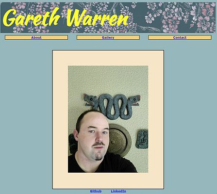
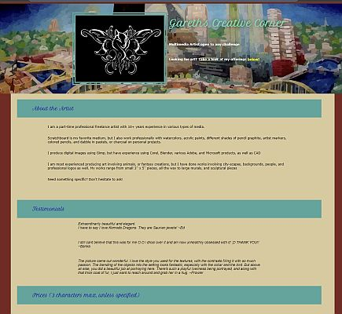
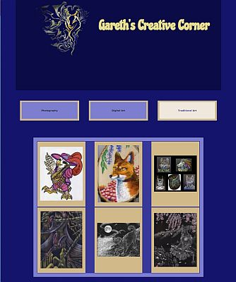
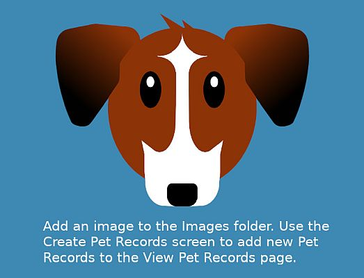
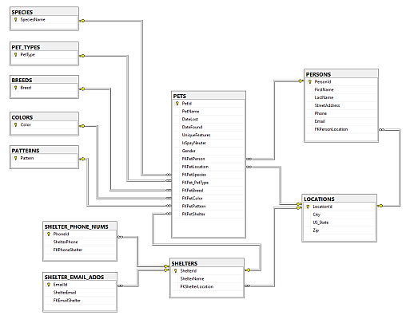
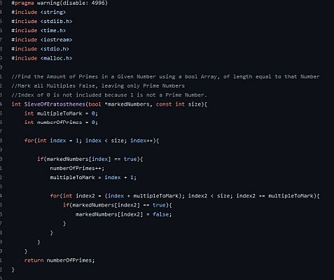
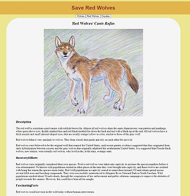

Unless otherwise stated, click on the title to see the project.
Web Development Projects
This Section contains the major projects completed for the Web Development Class at CCAC.
Personal Webpage
Project 1 of Web Development was to create a Personal Webpage. This page features an "About Me" section, a rudimentery Gallery, and a basic Contact page.
Landing Page
Project 2 of Web Development was to create an advertisement style Landing Page. This page features examples, and prices of art related services that I offer as a freelance artist.
Gallery Page
Project 3 of Web Development was to create a Gallery Style Page with links to other galleries. This page features three separate galleries featuring my digital, and traditional artwork, as well as some nature photography. Interactivity within the page is controlled by Javascript. Thus for the other two galleries to work Javascript must be enabled on the browser.
CCAC Code Projects
This Section contains the major projects completed at CCAC for the Software Development Degree.
Pet App Wireframe
This project is a JavaFX prototype of a larger app I attempted to create in years prior, called FindMyPet, done for Object Oriented Java 2. This app allows the user to add pet records, and view pet records. The project creates JSON records based on user input. There is some input verification. The app contains three Screens: An intro screen allows the user to view pet records or create/edit pet records. The other two are a form to create, or edit records, and the last is a screen to display the record; information and photos of added pets If a pet is listed as missing, a "Pet is Missing" warning pops up with their record I would prefer to show photos of the app itself, but I am having configuration issues, and the Java Virtual Machine can't find my main class to run the app.
Database Project
This project is a database created for Database Design. It is a prototype database for the Pet Records App that I mentioned above. The database is a SQL Database designed to run in Microsoft SQL Server 2016. It contains several tables, including a Location table (addresses), Persons (pet parent) Table, Pet Table. Pet table has several descriptor tables related to what kind of pet, and what appearance they have. Shelters table, also contains tables linking to phone numbers and email addresses, to support a one shelter to many contact options.
Click for Larger View{kind=link}
C/C++ Algorithms Coursework
Although this repository contains all of the projects done in both the Learning C (for Programmers), and Data Structures and Algorithms in C++ classes, the vast majority of the classes were focused more on the "Writing Algorithms" portion than the "Learning how to Code" portion. Thus they contain challenging solutions to things like the Sieve of Eratosthenes, implementing a Doubly Linked List, using Recursion to solve Towers of Hanoi etc
Personal Projects
This section contains a couple personal projects that I completed prior to starting CCAC in an attempt to learn how to code and get a software development job on my own.
Vue.js Projects
This repository contains all of the projects I completed, or attempted trying to learn the Vue Javascript framework, in order to recreate the app mentioned below called FindMyPet. Included in here is a primitive gallery that uses Axios, and also utilized JSONplaceholder to simulate a backend for data-binding to an external data store. There's also a project that uses Vuex to control the web application's state, as well as some half-starts. The readme summarizes everything I learned by doing this project, and what I attempted, or successfully created. The Projects in this repo suffer from major compatibility issues due to breaking changes to the Vue ecosystem to remove security vulnerabilities. They will not currently run.
Red Wolves Webpage
First website I successfully completed, however, it was never deployed. This is a static website that utilizes Javascript to switch between three tabs. The tabs explains the differences between red wolves, wolves, and coyotes, in an attempt to foster awareness for red wolf conservation. Website features my own artwork as examples of each animal. On load, the page displays a placeholder image, with portrait of a red wolf. On click, the menu is displayed, and a dropdown controller pops content into place that is made visible on button click.
Find My Pet Rewrites: links below
In 2018 I started work on a long-term project in order to reunite people with their pets. It has since gone through major architecture shifts.
I first attempted to create it as a C# Model View Controller in .NET app, before knowing really what the MVC framework was, or what it did. I now know that it is a design pattern, applicable to any programming language, and that I was attempting to use the created project in the wrong way.
The original build was scrapped in order to support multiple platforms. It was rewritten as a Xamarin crossplatform app with C# and .NET. However I had problems managing the separate projects for IOS, Android, and the Universal Windows Platform (UWP). I scrapped it in favor of using a Progressive Web Application build with Vue.js mentioned above.